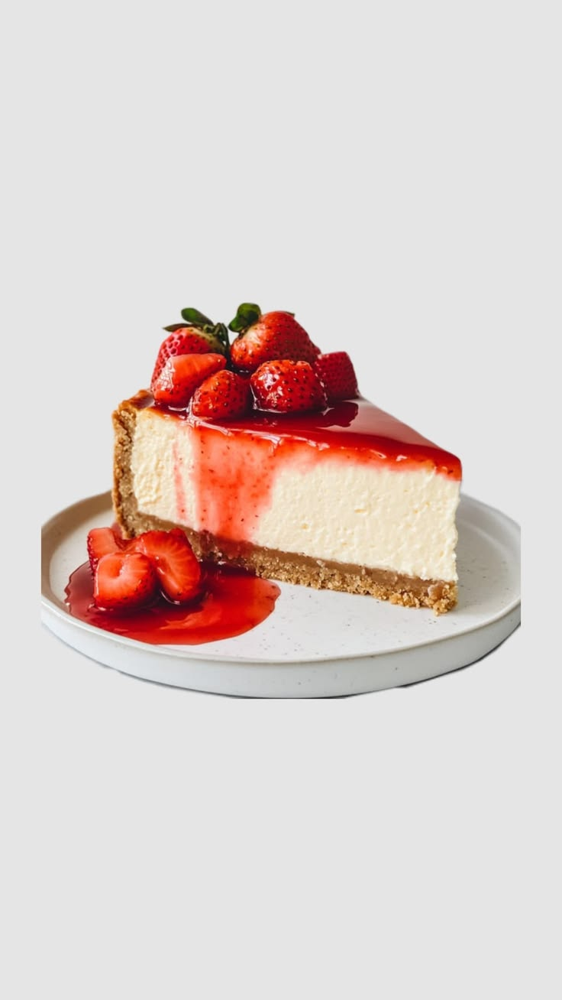
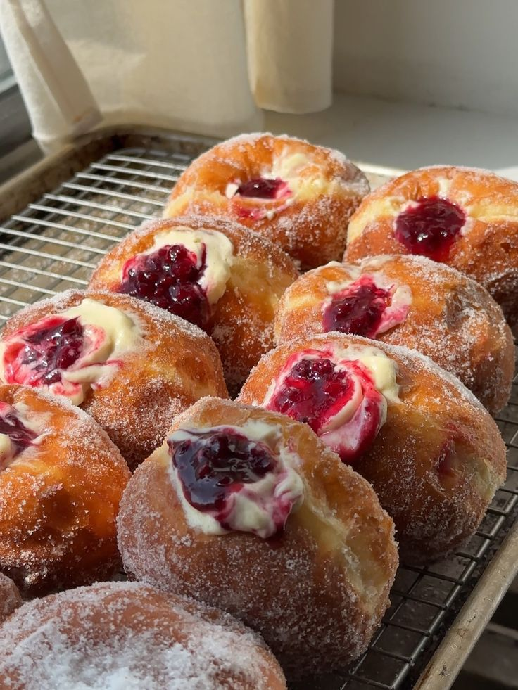

This week’s favourite
Strawberry velvet cheesecake
Silky cheesecake, a buttery crumb, and bright strawberries piled high. One delicious reason to stay for dessert.
See the bake counter →Small-batch bakery · made daily
Warm pastries, joyful cakes, and a little everyday magic—baked for the moments worth sharing.

sweet little moments, baked fresh

This week’s favourite
Silky cheesecake, a buttery crumb, and bright strawberries piled high. One delicious reason to stay for dessert.
See the bake counter →Try our interactive bake finder
Tell us a flavour you love and we’ll pair it with a bakery treat.